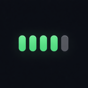

TimrTimr Privacy Policy
Last updated: November 10, 2026
Timr is a countdown timer for iPhone. It has no accounts and no sign-in, and it doesn't collect any data. Everything you create stays on your iPhone. This page explains exactly what the app stores and where.
What stays on your phone
| Data | What it's for |
|---|---|
| Your Timrs | Each Timr's name, end time, colour, notes and alert settings. Stored on your iPhone only. |
| App preferences | Small settings such as whether you've finished the welcome demo and whether the Finished list is open. |
| End alerts | If you turn on Notify when done, Timr schedules a local notification on your iPhone for that Timr's end time. Nothing is sent to a server. |
| Lock Screen and Dynamic Island countdowns | Timr Pro can show a Timr's name, colour and end time as a Live Activity. iOS displays it on your iPhone; it isn't sent anywhere. |
Timr makes no network connections of its own. Nothing you enter is sent to us or to anyone else.
Purchases
Timr Pro is a one-time purchase through Apple's App Store. Apple handles the payment and tells the app whether you own Timr Pro; we never see your payment details or your Apple ID. Apple handles purchases under Apple's privacy policy.
What we don't do
- No accounts, no advertising, no third-party analytics or tracking SDKs.
- No tracking across other apps or websites, and no selling of data.
- No data collection: we have no servers that receive anything from the app.
Your controls
- Edit or delete any Timr in the app; swipe left to delete, or clear all finished Timrs at once.
- Notifications and Live Activities can be turned off at any time in Settings → Timr.
- Deleting the app removes everything it stored.
Children
Timr is suitable for all ages and collects no personal information from anyone, including children.
Changes
If this policy changes, the new version will be posted on this page with a new “Last updated” date. If Timr ever starts sharing any data, the app will tell you before it does.
Contact
Questions about privacy? Email support@skywarddevs.app.